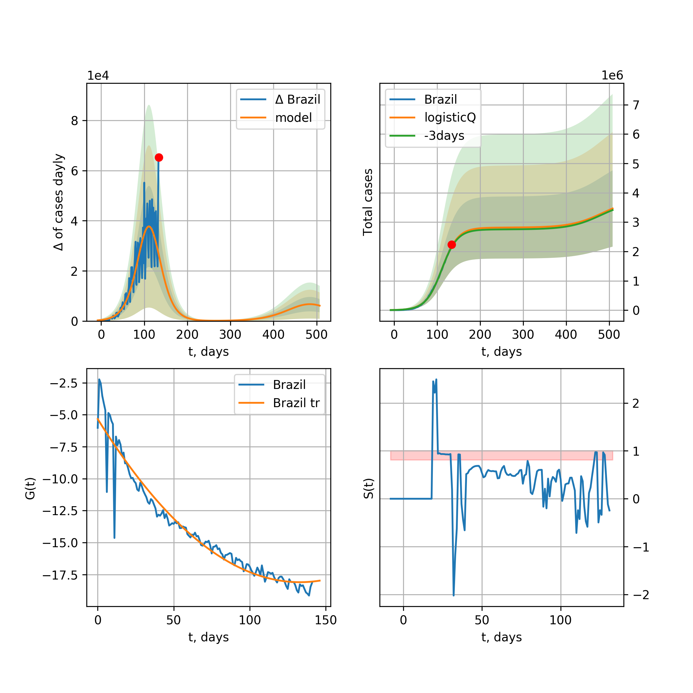

Multi-logistic model of COVID-19 dynamics
Model, code, results
Project maintained by algmaknick Hosted on GitHub Pages — Theme by mattgraham
World

World data at: 2020-05-28
+3 day model MAPE: 0.019345
model: bi-Richards
coeffs: [ 7.91651188e+06 3.64951682e+00 -5.85840170e+01 8.77742497e-03]
S.Korea scenario coeffs: [0.36242246, 2.56241634, 1.84890887, 0.13324732]
rational stdev: 0.249670
forecast at the end of period: +479 days
deltaDaycases: 8146
total cases: 10223671 ± 2552542
total death: 626466 ± 469229
bi-Richards approximation splitting point: 55
trend coefficient of determination: 0.355938
intercept: -1.892451
slope: -0.041391
trend coefficient of determination: 0.914881
intercept: -0.758718
slope: -0.029501
European Union

European Union data at: 2020-05-28
+3 day model MAPE: 0.007879
model: logisticQ
coeffs: [ 1.14170082e+06 4.95832718e-07 3.50152457e+01 -2.12020238e+05]
S.Korea scenario coeffs: [0.35416971, 0.02606324, 4.35859408, 19.30413219]
rational stdev: 0.343749
forecast at the end of period: +254 days
deltaDaycases: 1
total cases: 1546036 ± 531447
total death: 162893 ± 167982
trend coefficient of determination: 0.989437
intercept_: -7.783737464726583
coeffs_: [ 0. -0.27102594 0.00158826]
USA

USA data at: 2020-05-28
+3 day model MAPE: 0.010386
model: Richards
coeffs: [ 2.07084673e+06 4.32059169e+00 -6.31529952e+01 1.01664104e-02]
S.Korea scenario coeffs: [0.36242246, 2.56241634, 1.84890887, 0.13324732]
rational stdev: 0.349098
forecast at the end of period: +471 days
deltaDaycases: 362
total cases: 2796989 ± 976423
total death: 163426 ± 171155
trend coefficient of determination: 0.954703
intercept: -1.053136
slope: -0.044014
Spain

Spain data at: 2020-05-28
+3 day model MAPE: 0.002178
model: Richards
coeffs: [ 2.91774135e+05 9.00585271e+00 -5.21706302e+01 6.83700881e-03]
S.Korea scenario coeffs: [0.36242246, 2.56241634, 1.84890887, 0.13324732]
rational stdev: 0.237951
forecast at the end of period: +289 days
deltaDaycases: 120
total cases: 391682 ± 93201
total death: 37272 ± 26606
trend coefficient of determination: 0.953996
intercept: -0.722684
slope: -0.060421
Italy

Italy data at: 2020-05-28
+3 day model MAPE: 0.001045
model: Richards
coeffs: [ 2.36438340e+05 6.21330158e+00 -5.17357666e+01 9.61610745e-03]
S.Korea scenario coeffs: [0.36242246, 2.56241634, 1.84890887, 0.13324732]
rational stdev: 0.070321
forecast at the end of period: +261 days
deltaDaycases: 147
total cases: 314631 ± 22125
total death: 44998 ± 9492
trend coefficient of determination: 0.985001
intercept: -1.087492
slope: -0.056944
United Kingdom

United Kingdom data at: 2020-05-28
+3 day model MAPE: 0.003178
model: Richards
coeffs: [ 3.14086446e+05 3.77425593e+00 -6.00928713e+01 1.24625817e-02]
S.Korea scenario coeffs: [0.36242246, 2.56241634, 1.84890887, 0.13324732]
rational stdev: 0.134062
forecast at the end of period: +359 days
deltaDaycases: 166
total cases: 417118 ± 55919
total death: 58643 ± 23585
trend coefficient of determination: 0.958276
intercept: -1.389607
slope: -0.045573
France

France data at: 2020-05-28
+3 day model MAPE: 0.003142
model: Richards
coeffs: [1.81416415e+05 4.39418420e-01 1.52322983e+01 2.16516423e-01]
S.Korea scenario coeffs: [0.36242246, 2.56241634, 1.84890887, 0.13324732]
rational stdev: 0.628440
forecast at the end of period: +121 days
deltaDaycases: 202
total cases: 240683 ± 151255
total death: 37041 ± 69834
trend coefficient of determination: 0.906608
intercept: -2.160984
slope: -0.079236
Germany

Germany data at: 2020-05-28
+3 day model MAPE: 0.003988
model: Richards
coeffs: [ 1.79526419e+05 9.83193115e+00 -4.31099632e+01 8.14475875e-03]
S.Korea scenario coeffs: [0.36242246, 2.56241634, 1.84890887, 0.13324732]
rational stdev: 0.396841
forecast at the end of period: +191 days
deltaDaycases: 118
total cases: 240168 ± 95308
total death: 11281 ± 13430
trend coefficient of determination: 0.953552
intercept: -1.239550
slope: -0.064505
Turkey

Turkey data at: 2020-05-28
+3 day model MAPE: 0.006914
model: Richards
coeffs: [ 1.63903202e+05 6.78217639e+00 -3.87988868e+01 1.03741149e-02]
S.Korea scenario coeffs: [0.36242246, 2.56241634, 1.84890887, 0.13324732]
rational stdev: 0.251982
forecast at the end of period: +196 days
deltaDaycases: 246
total cases: 211982 ± 53415
total death: 5874 ± 4440
trend coefficient of determination: 0.797333
intercept: -0.996211
slope: -0.057116
Russia

Russia data at: 2020-05-28
+3 day model MAPE: 0.006153
model: Richards
coeffs: [5.19919981e+05 1.89185025e-01 2.71683769e+01 3.38509193e-01]
S.Korea scenario coeffs: [0.36242246, 2.56241634, 1.84890887, 0.13324732]
rational stdev: 0.156971
forecast at the end of period: +219 days
deltaDaycases: 520
total cases: 682859 ± 107189
total death: 7461 ± 3513
trend coefficient of determination: 0.987549
intercept: -3.770853
slope: -0.067328
Iran

Iran data at: 2020-05-28
+3 day model MAPE: 0.001863
model: bi-Richards
coeffs: [7.53140383e+04 3.44517934e+00 3.16391552e+01 2.13865530e-02]
S.Korea scenario coeffs: [0.36242246, 2.56241634, 1.84890887, 0.13324732]
rational stdev: 0.299509
forecast at the end of period: +303 days
deltaDaycases: 48
total cases: 203095 ± 60829
total death: 10768 ± 9675
bi-Richards approximation splitting point: 75
trend coefficient of determination: 0.949188
intercept: -0.974878
slope: -0.056075
trend coefficient of determination: 0.027485
intercept: -4.653201
slope: 0.002724
Brazil

Brazil data at: 2020-05-28
+3 day model MAPE: 0.002990
model: logisticQ
coeffs: [ 1.04436092e+06 7.66862597e-06 8.33830065e+01 -9.84257390e+03]
S.Korea scenario coeffs: [0.35416971, 0.02606324, 4.35859408, 19.30413219]
rational stdev: 0.393832
forecast at the end of period: +429 days
deltaDaycases: 57
total cases: 1412743 ± 556383
total death: 86165 ± 101803
trend coefficient of determination: 0.892464
intercept_: -4.338995698860915
coeffs_: [ 0. -0.26583623 0.00158566]

Brazil data at: 2020-05-28
+3 day model MAPE: 0.013990
model: Richards
coeffs: [9.21235710e+06 1.71956558e-01 2.66773795e+01 1.10468786e-01]
S.Korea scenario coeffs: [0.36242246, 2.56241634, 1.84890887, 0.13324732]
rational stdev: 0.343425
forecast at the end of period: +1059 days
deltaDaycases: 1222
total cases: 12357346 ± 4243823
total death: 753698 ± 776516
trend coefficient of determination: 0.207799
intercept: -2.633345
slope: -0.023873
Canada

Canada data at: 2020-05-28
+3 day model MAPE: 0.003470
model: Richards
coeffs: [ 1.08434045e+05 2.88664087e+00 -6.70631820e+01 1.48898564e-02]
S.Korea scenario coeffs: [0.36242246, 2.56241634, 1.84890887, 0.13324732]
rational stdev: 0.175830
forecast at the end of period: +420 days
deltaDaycases: 35
total cases: 145285 ± 25545
total death: 11288 ± 5954
trend coefficient of determination: 0.961206
intercept: -1.585188
slope: -0.044652
Belgium

Belgium data at: 2020-05-28
+3 day model MAPE: 0.002724
model: Richards
coeffs: [ 5.90127936e+04 3.43773583e+00 -3.34115595e+01 1.99490885e-02]
S.Korea scenario coeffs: [0.36242246, 2.56241634, 1.84890887, 0.13324732]
rational stdev: 0.853741
forecast at the end of period: +191 days
deltaDaycases: 74
total cases: 76973 ± 65715
total death: 12491 ± 31992
trend coefficient of determination: 0.946889
intercept: -1.264280
slope: -0.059107
Peru

Peru data at: 2020-05-28
+3 day model MAPE: 0.021133
model: Richards
coeffs: [ 3.99894763e+05 6.40225947e-01 -2.46810437e+01 4.70417671e-02]
S.Korea scenario coeffs: [0.36242246, 2.56241634, 1.84890887, 0.13324732]
rational stdev: 0.217887
forecast at the end of period: +499 days
deltaDaycases: 312
total cases: 509952 ± 111112
total death: 14743 ± 9636
trend coefficient of determination: 0.694932
intercept: -1.635099
slope: -0.030175
Netherlands

Netherlands data at: 2020-05-28
+3 day model MAPE: 0.002733
model: Richards
coeffs: [ 4.65141089e+04 5.86703328e-01 -1.37924834e+00 1.21457856e-01]
S.Korea scenario coeffs: [0.36242246, 2.56241634, 1.84890887, 0.13324732]
rational stdev: 0.128677
forecast at the end of period: +191 days
deltaDaycases: 29
total cases: 62113 ± 7992
total death: 7979 ± 3080
trend coefficient of determination: 0.971101
intercept: -1.564876
slope: -0.067580
India

India data at: 2020-05-28
+3 day model MAPE: 0.006651
model: Richards
coeffs: [ 2.84494140e+06 4.21629325e-01 -4.88379439e+01 3.90874547e-02]
S.Korea scenario coeffs: [0.36242246, 2.56241634, 1.84890887, 0.13324732]
rational stdev: 0.372559
forecast at the end of period: +1059 days
deltaDaycases: 909
total cases: 3698424 ± 1377879
total death: 105086 ± 117452
trend coefficient of determination: 0.570845
intercept: -1.794545
slope: -0.021716
Switzerland

Switzerland data at: 2020-05-28
+3 day model MAPE: 0.002081
model: logisticQ
coeffs: [ 3.01001643e+04 7.12680475e-07 2.60087504e+01 -2.01283455e+05]
S.Korea scenario coeffs: [0.35416971, 0.02606324, 4.35859408, 19.30413219]
rational stdev: 0.336084
forecast at the end of period: +79 days
deltaDaycases: 19
total cases: 40491 ± 13608
total death: 2523 ± 2543
trend coefficient of determination: 0.982290
intercept_: -3.9895276743711783
coeffs_: [ 0. -0.30004136 0.00167345]
Ecuador

Ecuador data at: 2020-05-28
+3 day model MAPE: 0.009709
model: Richards
coeffs: [ 5.92930395e+04 2.01865545e+00 -7.02276180e+01 1.63382386e-02]
S.Korea scenario coeffs: [0.36242246, 2.56241634, 1.84890887, 0.13324732]
rational stdev: 0.364773
forecast at the end of period: +639 days
deltaDaycases: 7
total cases: 80104 ± 29219
total death: 6898 ± 7548
trend coefficient of determination: 0.149002
intercept: -2.230923
slope: -0.032859
Portugal

Portugal data at: 2020-05-28
+3 day model MAPE: 0.007235
model: bi-Richards
coeffs: [7.16646039e+03 4.61657011e+00 2.77600170e+00 1.34445480e-02]
rational stdev: 1.374155
forecast at the end of period: +219 days
deltaDaycases: 0
total cases: 35334 ± 48555
total death: 1531 ± 6311
bi-Richards approximation splitting point: 61
trend coefficient of determination: 0.882475
intercept: -0.744027
slope: -0.064748
trend coefficient of determination: 0.013663
intercept: -4.498411
slope: -0.006585
Saudi Arabia

Saudi Arabia data at: 2020-05-28
+3 day model MAPE: 0.016880
model: Richards
coeffs: [ 2.42044779e+05 4.56131304e-01 -9.82149276e+00 6.52166096e-02]
S.Korea scenario coeffs: [0.36242246, 2.56241634, 1.84890887, 0.13324732]
rational stdev: 0.294375
forecast at the end of period: +667 days
deltaDaycases: 42
total cases: 325531 ± 95828
total death: 1790 ± 1580
trend coefficient of determination: 0.179040
intercept: -2.291564
slope: -0.020758
Sweden

Sweden data at: 2020-05-28
+3 day model MAPE: 0.007317
model: Richards
coeffs: [ 4.88938940e+04 1.99176791e+00 -6.77206006e+01 1.70040581e-02]
S.Korea scenario coeffs: [0.36242246, 2.56241634, 1.84890887, 0.13324732]
rational stdev: 0.265523
forecast at the end of period: +429 days
deltaDaycases: 42
total cases: 62394 ± 16567
total death: 7450 ± 5934
trend coefficient of determination: 0.842888
intercept: -1.417193
slope: -0.036066
Pakistan

Pakistan data at: 2020-05-28
+3 day model MAPE: 0.031491
model: Richards
coeffs: [2.16824121e+05 9.75654108e-02 6.79224017e+01 3.74913634e-01]
S.Korea scenario coeffs: [0.36242246, 2.56241634, 1.84890887, 0.13324732]
rational stdev: 0.389014
forecast at the end of period: +499 days
deltaDaycases: 61
total cases: 290324 ± 112940
total death: 5971 ± 6968
trend coefficient of determination: 0.808485
intercept: -3.160027
slope: -0.053616
Ireland

Ireland data at: 2020-05-28
+3 day model MAPE: 0.004325
model: logisticQ
coeffs: [ 2.44568663e+04 1.49643873e-06 3.55786794e+01 -8.26513846e+04]
S.Korea scenario coeffs: [0.35416971, 0.02606324, 4.35859408, 19.30413219]
rational stdev: 0.312968
forecast at the end of period: +121 days
deltaDaycases: 31
total cases: 32590 ± 10199
total death: 2150 ± 2018
trend coefficient of determination: 0.982687
intercept_: -3.9327134668654526
coeffs_: [ 0. -0.25998614 0.00138813]
Mexico

Mexico data at: 2020-05-28
+3 day model MAPE: 0.014387
model: Richards
coeffs: [ 5.87810909e+05 5.69978818e-01 -6.38132028e+01 3.59942750e-02]
S.Korea scenario coeffs: [0.36242246, 2.56241634, 1.84890887, 0.13324732]
rational stdev: 0.169416
forecast at the end of period: +779 days
deltaDaycases: 291
total cases: 753679 ± 127685
total death: 83738 ± 42559
trend coefficient of determination: 0.867871
intercept: -1.979273
slope: -0.025460
Singapore

Singapore data at: 2020-05-28
+3 day model MAPE: 0.022980
model: bi-Richards
coeffs: [2.52829472e+04 9.10491039e+00 1.50296480e+01 7.57367487e-03]
S.Korea scenario coeffs: [0.36242246, 2.56241634, 1.84890887, 0.13324732]
rational stdev: 0.264772
forecast at the end of period: +289 days
deltaDaycases: 25
total cases: 42622 ± 11285
total death: 29 ± 23
bi-Richards approximation splitting point: 60
trend coefficient of determination: 0.125083
intercept: -2.318273
slope: -0.021595
trend coefficient of determination: 0.628521
intercept: -0.238419
slope: -0.031237
Chile

Chile data at: 2020-05-28
+3 day model MAPE: 0.001249
model: bi-Richards
coeffs: [5.88920689e+05 6.10718995e-02 1.09378431e+02 7.25164127e+00]
S.Korea scenario coeffs: [0.36242246, 2.56241634, 1.84890887, 0.13324732]
rational stdev: 0.416583
forecast at the end of period: +149 days
deltaDaycases: 809
total cases: 797909 ± 332395
total death: 8167 ± 10206
bi-Richards approximation splitting point: 20
trend coefficient of determination: 0.977510
intercept: -6.849185
slope: -2.433565
trend coefficient of determination: 0.970344
intercept: -47.993037
slope: -0.445639
Israel

Israel data at: 2020-05-28
+3 day model MAPE: 0.000684
model: Richards
coeffs: [ 1.69996251e+04 6.47411497e+00 -3.64569045e+01 1.37801969e-02]
S.Korea scenario coeffs: [0.36242246, 2.56241634, 1.84890887, 0.13324732]
rational stdev: 0.164665
forecast at the end of period: +191 days
deltaDaycases: 4
total cases: 23001 ± 3787
total death: 387 ± 191
trend coefficient of determination: 0.906957
intercept: -1.153127
slope: -0.086822
Austria

Austria data at: 2020-05-28
+3 day model MAPE: 0.004325
model: logisticQ
coeffs: [ 1.57177567e+04 6.67194779e-07 2.39372948e+01 -2.71151539e+05]
S.Korea scenario coeffs: [0.35416971, 0.02606324, 4.35859408, 19.30413219]
rational stdev: 0.323269
forecast at the end of period: +65 days
deltaDaycases: 8
total cases: 21190 ± 6850
total death: 851 ± 825
trend coefficient of determination: 0.980152
intercept_: -2.903275629394587
coeffs_: [ 0. -0.34333519 0.00225883]
Belarus

Belarus data at: 2020-05-28
+3 day model MAPE: 0.008782
model: Richards
coeffs: [ 6.37695696e+04 2.18611926e+00 -6.16254627e+01 1.91887082e-02]
S.Korea scenario coeffs: [0.36242246, 2.56241634, 1.84890887, 0.13324732]
rational stdev: 0.154623
forecast at the end of period: +359 days
deltaDaycases: 58
total cases: 82346 ± 12732
total death: 452 ± 209
trend coefficient of determination: 0.896319
intercept: -1.688304
slope: -0.042355
Japan

Japan data at: 2020-05-28
+3 day model MAPE: 0.003678
model: Richards
coeffs: [1.65004687e+04 1.12325964e-01 7.71716969e+01 1.16124840e+00]
S.Korea scenario coeffs: [0.36242246, 2.56241634, 1.84890887, 0.13324732]
rational stdev: 1.096640
forecast at the end of period: +149 days
deltaDaycases: 6
total cases: 22336 ± 24495
total death: 1160 ± 3816
trend coefficient of determination: 0.774784
intercept: -6.118881
slope: -0.092051
Qatar

Qatar data at: 2020-05-28
+3 day model MAPE: 0.001330
model: Richards
coeffs: [ 2.63069956e+05 4.68169085e-01 -4.00281375e+01 4.93327347e-02]
S.Korea scenario coeffs: [0.36242246, 2.56241634, 1.84890887, 0.13324732]
rational stdev: 0.537329
forecast at the end of period: +933 days
deltaDaycases: 23
total cases: 355417 ± 190976
total death: 230 ± 370
trend coefficient of determination: 0.016069
intercept: -3.200565
slope: -0.003474
Poland

Poland data at: 2020-05-28
+3 day model MAPE: 0.021379
model: Richards
coeffs: [ 2.99267327e+04 3.19106484e+00 -8.23663053e+01 1.11378283e-02]
S.Korea scenario coeffs: [0.36242246, 2.56241634, 1.84890887, 0.13324732]
rational stdev: 0.325984
forecast at the end of period: +499 days
deltaDaycases: 11
total cases: 39762 ± 12961
total death: 1808 ± 1768
trend coefficient of determination: 0.791780
intercept: -1.371793
slope: -0.038621
UAE

UAE data at: 2020-05-28
+3 day model MAPE: 0.012176
model: Richards
coeffs: [ 8.27313754e+04 1.44576870e+00 -1.03026434e+02 1.78511983e-02]
S.Korea scenario coeffs: [0.36242246, 2.56241634, 1.84890887, 0.13324732]
rational stdev: 0.181944
forecast at the end of period: +653 days
deltaDaycases: 34
total cases: 108457 ± 19733
total death: 860 ± 469
trend coefficient of determination: 0.843966
intercept: -2.046116
slope: -0.032087
Romania

Romania data at: 2020-05-28
+3 day model MAPE: 0.003352
model: Richards
coeffs: [ 2.15572448e+04 3.86703480e+00 -5.84679554e+01 1.21595716e-02]
S.Korea scenario coeffs: [0.36242246, 2.56241634, 1.84890887, 0.13324732]
rational stdev: 0.185149
forecast at the end of period: +331 days
deltaDaycases: 17
total cases: 28227 ± 5226
total death: 1855 ± 1030
trend coefficient of determination: 0.918908
intercept: -1.276833
slope: -0.045152
Ukraine

Ukraine data at: 2020-05-28
+3 day model MAPE: 0.003719
model: Richards
coeffs: [ 3.03135961e+04 2.04051440e+00 -4.64506443e+01 2.17375790e-02]
S.Korea scenario coeffs: [0.36242246, 2.56241634, 1.84890887, 0.13324732]
rational stdev: 0.175423
forecast at the end of period: +359 days
deltaDaycases: 21
total cases: 39763 ± 6975
total death: 1188 ± 625
trend coefficient of determination: 0.739216
intercept: -1.426174
slope: -0.041428
Indonesia

Indonesia data at: 2020-05-28
+3 day model MAPE: 0.020025
model: Richards
coeffs: [ 7.20563324e+04 1.41674837e+00 -1.27489268e+02 1.49502771e-02]
S.Korea scenario coeffs: [0.36242246, 2.56241634, 1.84890887, 0.13324732]
rational stdev: 0.212542
forecast at the end of period: +667 days
deltaDaycases: 54
total cases: 88625 ± 18836
total death: 5403 ± 3445
trend coefficient of determination: 0.797942
intercept: -1.972947
slope: -0.029149
Bangladesh

Bangladesh data at: 2020-05-28
+3 day model MAPE: 0.002164
model: bi-Richards
coeffs: [ 3.04455433e+05 9.43958900e-01 -5.73800200e+01 2.42684038e-02]
S.Korea scenario coeffs: [0.36242246, 2.56241634, 1.84890887, 0.13324732]
rational stdev: 0.355397
forecast at the end of period: +807 days
deltaDaycases: 104
total cases: 400669 ± 142396
total death: 5554 ± 5921
bi-Richards approximation splitting point: 29
trend coefficient of determination: 0.034728
intercept: -4.299806
slope: 0.051633
trend coefficient of determination: 0.829744
intercept: -0.691288
slope: -0.036243
South_Korea

South Korea data at: 2020-05-28
+3 day model MAPE: 0.003817
model: bi-Richards
coeffs: [ 3.09648209e+03 1.97864382e-01 -6.21390401e+01 -1.19752014e+03 3.60540868e-04]
rational stdev: 0.114300
forecast at the end of period: +51 days
deltaDaycases: 0
total cases: 11002 ± 1257
total death: 259 ± 88
bi-logisticQ approximation splitting point: 25
trend coefficient of determination: 0.936460
intercept: -5.478818
slope: -0.338423
trend coefficient of determination: 0.404101
intercept: -12.925266
slope: -0.035495
Denmark

Denmark data at: 2020-05-28
+3 day model MAPE: 0.001888
model: Richards
coeffs: [ 1.21422906e+04 5.20528283e-01 -1.25923480e+01 1.06660248e-01]
S.Korea scenario coeffs: [0.36242246, 2.56241634, 1.84890887, 0.13324732]
rational stdev: 0.294626
forecast at the end of period: +261 days
deltaDaycases: 5
total cases: 16237 ± 4784
total death: 801 ± 707
trend coefficient of determination: 0.898956
intercept: -1.996919
slope: -0.055029
Serbia

Serbia data at: 2020-05-28
+3 day model MAPE: 0.007099
model: bi-Richards
coeffs: [ 5.98827957e+03 2.02138255e+00 -4.94890303e+01 1.50104953e-02]
rational stdev: 0.143271
forecast at the end of period: +191 days
deltaDaycases: 0
total cases: 16288 ± 2333
total death: 347 ± 149
bi-Richards approximation splitting point: 50
trend coefficient of determination: 0.685180
intercept: -1.215828
slope: -0.049200
trend coefficient of determination: 0.594670
intercept: -1.654907
slope: -0.052801
Kuwait

Kuwait data at: 2020-05-28
+3 day model MAPE: 0.012386
model: bi-Richards
coeffs: [2.49642434e+04 1.42964468e-01 7.68229469e+01 1.18868422e+00]
S.Korea scenario coeffs: [0.36242246, 2.56241634, 1.84890887, 0.13324732]
rational stdev: 0.158774
forecast at the end of period: +128 days
deltaDaycases: 46
total cases: 35807 ± 5685
total death: 274 ± 130
bi-Richards approximation splitting point: 25
trend coefficient of determination: 0.102183
intercept: -7.189158
slope: -0.081441
trend coefficient of determination: 0.925700
intercept: -6.519365
slope: -0.093760
Philippines

Philippines data at: 2020-05-28
+3 day model MAPE: 0.026483
model: Richards
coeffs: [ 2.01150993e+04 4.44887617e+00 -1.04314783e+02 7.74365630e-03]
S.Korea scenario coeffs: [0.36242246, 2.56241634, 1.84890887, 0.13324732]
rational stdev: 0.330275
forecast at the end of period: +485 days
deltaDaycases: 10
total cases: 26411 ± 8723
total death: 1560 ± 1545
trend coefficient of determination: 0.658094
intercept: -1.723382
slope: -0.037131
Norway

Norway data at: 2020-05-28
+3 day model MAPE: 0.001930
model: Richards
coeffs: [ 8.36951496e+03 7.13698568e+00 -4.12866350e+01 1.04621810e-02]
S.Korea scenario coeffs: [0.36242246, 2.56241634, 1.84890887, 0.13324732]
rational stdev: 0.169576
forecast at the end of period: +191 days
deltaDaycases: 6
total cases: 11135 ± 1888
total death: 312 ± 158
trend coefficient of determination: 0.939627
intercept: -0.933819
slope: -0.067961
Czechia

Czechia data at: 2020-05-28
+3 day model MAPE: 0.002572
model: bi-Richards
coeffs: [ 2.92912969e+03 2.64214225e+00 -2.64655819e+00 1.89635472e-02]
rational stdev: 1.134247
forecast at the end of period: +79 days
deltaDaycases: 2
total cases: 10789 ± 12237
total death: 376 ± 1279
bi-Richards approximation splitting point: 59
trend coefficient of determination: 0.406455
intercept: -1.495922
slope: -0.055461
trend coefficient of determination: 0.000214
intercept: -5.376697
slope: 0.000810
Colombia

Colombia data at: 2020-05-28
+3 day model MAPE: 0.036066
model: bi-Richards
coeffs: [ 6.15419731e+04 2.39166174e+00 -2.71797254e+01 1.68232309e-02]
S.Korea scenario coeffs: [0.36242246, 2.56241634, 1.84890887, 0.13324732]
rational stdev: 0.202225
forecast at the end of period: +499 days
deltaDaycases: 25
total cases: 86942 ± 17581
total death: 2817 ± 1709
bi-Richards approximation splitting point: 40
trend coefficient of determination: 0.746197
intercept: -1.020513
slope: -0.063678
trend coefficient of determination: 0.072294
intercept: -2.974140
slope: -0.004119
Australia

Australia data at: 2020-05-28
+3 day model MAPE: 0.001281
model: bi-Richards
coeffs: [ 9.54917371e+02 7.21948846e+00 -3.71294935e+01 8.15055165e-03]
S.Korea scenario coeffs: [0.36242246, 2.56241634, 1.84890887, 0.13324732]
rational stdev: 0.745660
forecast at the end of period: +51 days
deltaDaycases: 0
total cases: 7247 ± 5404
total death: 104 ± 232
bi-Richards approximation splitting point: 50
trend coefficient of determination: 0.755925
intercept: -0.977648
slope: -0.083586
trend coefficient of determination: 0.083910
intercept: -5.374108
slope: -0.015412
Malaysia

Malaysia data at: 2020-05-28
+3 day model MAPE: 0.018199
model: logisticQ
coeffs: [ 6.96000995e+03 3.85802133e-07 3.10372247e+01 -2.63570172e+05]
S.Korea scenario coeffs: [0.35416971, 0.02606324, 4.35859408, 19.30413219]
rational stdev: 0.333328
forecast at the end of period: +114 days
deltaDaycases: 5
total cases: 9324 ± 3108
total death: 140 ± 139
trend coefficient of determination: 0.874166
intercept_: -4.520256236180257
coeffs_: [ 0. -0.23897088 0.00150667]
Dominican Republic

Dominican Republic data at: 2020-05-28
+3 day model MAPE: 0.004697
model: Richards
coeffs: [ 3.26407901e+04 1.35477107e+00 -9.77488885e+01 1.98531096e-02]
S.Korea scenario coeffs: [0.36242246, 2.56241634, 1.84890887, 0.13324732]
rational stdev: 0.159006
forecast at the end of period: +653 days
deltaDaycases: 10
total cases: 43312 ± 6886
total death: 1307 ± 623
trend coefficient of determination: 0.716467
intercept: -2.057570
slope: -0.034179
Egypt

Egypt data at: 2020-05-28
+3 day model MAPE: 0.024340
model: Richards
coeffs: [ 5.34971559e+05 2.05974057e-01 -3.87665772e+01 6.55732574e-02]
S.Korea scenario coeffs: [0.36242246, 2.56241634, 1.84890887, 0.13324732]
rational stdev: 0.198016
forecast at the end of period: +1199 days
deltaDaycases: 168
total cases: 687580 ± 136151
total death: 27942 ± 16598
trend coefficient of determination: 0.605954
intercept: -2.576196
slope: -0.019441
Finland

Finland data at: 2020-05-28
+3 day model MAPE: 0.002938
model: Richards
coeffs: [ 7.56039897e+03 2.10894516e+00 -5.22033545e+01 2.23912336e-02]
S.Korea scenario coeffs: [0.36242246, 2.56241634, 1.84890887, 0.13324732]
rational stdev: 0.155274
forecast at the end of period: +331 days
deltaDaycases: 4
total cases: 10036 ± 1558
total death: 465 ± 216
trend coefficient of determination: 0.873039
intercept: -1.534604
slope: -0.050297
Morocco

Morocco data at: 2020-05-28
+3 day model MAPE: 0.007078
model: logisticQ
coeffs: [ 7.98711778e+03 1.11991976e-06 3.46926665e+01 -8.07061139e+04]
S.Korea scenario coeffs: [0.35416971, 0.02606324, 4.35859408, 19.30413219]
rational stdev: 0.273320
forecast at the end of period: +149 days
deltaDaycases: 6
total cases: 10668 ± 2915
total death: 281 ± 230
trend coefficient of determination: 0.966479
intercept_: -5.2980527105510875
coeffs_: [ 0. -0.20579927 0.00125258]
Argentina

Argentina data at: 2020-05-28
+3 day model MAPE: 0.037475
model: Richards
coeffs: [1.18652551e+05 4.31919721e-02 1.09618914e+02 7.06288535e+00]
S.Korea scenario coeffs: [0.36242246, 2.56241634, 1.84890887, 0.13324732]
rational stdev: 0.202933
forecast at the end of period: +184 days
deltaDaycases: 65
total cases: 161046 ± 32681
total death: 5564 ± 3387
trend coefficient of determination: 0.896689
intercept: -48.838457
slope: -0.336901
Algeria

Algeria data at: 2020-05-28
+3 day model MAPE: 0.015488
model: logisticQ
coeffs: [ 1.19414231e+04 1.32853098e-06 4.79583710e+01 -4.65592613e+04]
S.Korea scenario coeffs: [0.35416971, 0.02606324, 4.35859408, 19.30413219]
rational stdev: 0.271087
forecast at the end of period: +205 days
deltaDaycases: 15
total cases: 15619 ± 4234
total death: 1093 ± 888
trend coefficient of determination: 0.949644
intercept_: -6.5896297860321
coeffs_: [ 0. -0.17331543 0.00123681]
Luxembourg

Luxembourg data at: 2020-05-28
+3 day model MAPE: 0.002646
model: Richards
coeffs: [ 3.91387007e+03 2.01144091e+01 -3.70026648e+01 5.37896218e-03]
S.Korea scenario coeffs: [0.36242246, 2.56241634, 1.84890887, 0.13324732]
rational stdev: 0.221761
forecast at the end of period: +135 days
deltaDaycases: 2
total cases: 5263 ± 1167
total death: 144 ± 95
trend coefficient of determination: 0.678345
intercept: -1.680155
slope: -0.071217
Thailand

Thailand data at: 2020-05-28
+3 day model MAPE: 0.001146
model: Richards
coeffs: [ 3.01636071e+03 1.68960989e+01 -3.94727542e+01 7.13426493e-03]
S.Korea scenario coeffs: [0.36242246, 2.56241634, 1.84890887, 0.13324732]
rational stdev: 0.090989
forecast at the end of period: +107 days
deltaDaycases: 2
total cases: 4058 ± 369
total death: 75 ± 20
trend coefficient of determination: 0.771453
intercept: -1.554060
slope: -0.103573
Hungary

Hungary data at: 2020-05-27
+3 day model MAPE: 0.006222
model: Richards
coeffs: [3.97721222e+03 2.48777221e-01 1.46202619e+01 2.82051547e-01]
S.Korea scenario coeffs: [0.36242246, 2.56241634, 1.84890887, 0.13324732]
rational stdev: 0.134934
forecast at the end of period: +192 days
deltaDaycases: 2
total cases: 5298 ± 715
total death: 705 ± 285
trend coefficient of determination: 0.940911
intercept: -2.286527
slope: -0.068446
Greece

Greece data at: 2020-05-28
+3 day model MAPE: 0.005437
model: logisticQ
coeffs: [ 2.77851050e+03 4.97189040e-07 2.49359736e+01 -2.21699011e+05]
S.Korea scenario coeffs: [0.35416971, 0.02606324, 4.35859408, 19.30413219]
rational stdev: 0.267956
forecast at the end of period: +79 days
deltaDaycases: 2
total cases: 3708 ± 993
total death: 223 ± 179
trend coefficient of determination: 0.934340
intercept_: -3.7128223043250435
coeffs_: [ 0. -0.26293967 0.00169859]
Iraq

Iraq data at: 2020-05-28
+3 day model MAPE: 0.077322
model: bi-Richards
coeffs: [ 4.72751461e+04 1.16602196e+00 -8.83027631e+01 1.71350487e-02]
S.Korea scenario coeffs: [0.36242246, 2.56241634, 1.84890887, 0.13324732]
rational stdev: 0.058200
forecast at the end of period: +807 days
deltaDaycases: 29
total cases: 60513 ± 3521
total death: 1984 ± 346
bi-Richards approximation splitting point: 40
trend coefficient of determination: 0.679191
intercept: -1.752375
slope: -0.061618
trend coefficient of determination: 0.135000
intercept: -4.383459
slope: 0.013270
Croatia

Croatia data at: 2020-05-28
+3 day model MAPE: 0.003153
model: logisticQ
coeffs: [ 2.19082125e+03 6.94672284e-07 2.74089903e+01 -1.92609172e+05]
S.Korea scenario coeffs: [0.35416971, 0.02606324, 4.35859408, 19.30413219]
rational stdev: 0.322748
forecast at the end of period: +93 days
deltaDaycases: 1
total cases: 2947 ± 951
total death: 133 ± 128
trend coefficient of determination: 0.958793
intercept_: -2.7745627462531584
coeffs_: [ 0. -0.22574243 0.00089495]
Iceland

Iceland data at: 2020-05-27
+3 day model MAPE: 0.000092
model: logisticQ
coeffs: [ 1.80246665e+03 8.86292196e-06 1.33239829e+01 -1.99802637e+04]
rational stdev: 0.058988
forecast at the end of period: +24 days
deltaDaycases: 0
total cases: 1802 ± 106
total death: 9 ± 1
trend coefficient of determination: 0.936861
intercept_: -5.1409877681308425
coeffs_: [ 0. -0.2411694 0.00104272]
Estonia

Estonia data at: 2020-05-28
+3 day model MAPE: 0.002436
model: bi-Richards
coeffs: [7.76710587e+02 6.95975957e-01 1.13785015e+01 5.41015694e-02]
rational stdev: 0.115695
forecast at the end of period: +219 days
deltaDaycases: 0
total cases: 2526 ± 292
total death: 90 ± 31
bi-Richards approximation splitting point: 50
trend coefficient of determination: 0.751627
intercept: -1.850137
slope: -0.079715
trend coefficient of determination: 0.038027
intercept: -7.354214
slope: 0.016633
Bulgaria

Bulgaria data at: 2020-05-27
+3 day model MAPE: 0.014832
model: Richards
coeffs: [2.98490513e+03 8.51300800e-02 2.93856204e+01 6.86003211e-01]
S.Korea scenario coeffs: [0.36242246, 2.56241634, 1.84890887, 0.13324732]
rational stdev: 0.142553
forecast at the end of period: +360 days
deltaDaycases: 0
total cases: 4059 ± 578
total death: 219 ± 93
trend coefficient of determination: 0.855910
intercept: -5.438650
slope: -0.070200
New Zealand

New Zealand data at: 2020-05-28
+3 day model MAPE: 0.001125
model: logisticQ
coeffs: [ 1.48316442e+03 2.61946481e-06 2.50154651e+01 -9.24244019e+04]
S.Korea scenario coeffs: [0.35416971, 0.02606324, 4.35859408, 19.30413219]
rational stdev: 0.274300
forecast at the end of period: +79 days
deltaDaycases: 0
total cases: 2007 ± 550
total death: 29 ± 23
trend coefficient of determination: 0.902211
intercept_: -3.5729578368920185
coeffs_: [ 0. -0.17986227 0.00021014]
Slovenia

Slovenia data at: 2020-05-28
+3 day model MAPE: 0.000498
model: Richards
coeffs: [ 1.48328029e+03 4.89451853e-01 -6.41382319e+00 1.80936466e-01]
S.Korea scenario coeffs: [0.36242246, 2.56241634, 1.84890887, 0.13324732]
rational stdev: 0.206727
forecast at the end of period: +121 days
deltaDaycases: 1
total cases: 1982 ± 409
total death: 145 ± 89
trend coefficient of determination: 0.910879
intercept: -1.586511
slope: -0.103007
Slovakia

Slovakia data at: 2020-05-27
+3 day model MAPE: 0.002052
model: logisticQ
coeffs: [ 1.50079942e+03 3.99653968e-04 2.39267511e+01 -3.06466920e+02]
S.Korea scenario coeffs: [0.35416971, 0.02606324, 4.35859408, 19.30413219]
rational stdev: 0.240998
forecast at the end of period: +108 days
deltaDaycases: 0
total cases: 2027 ± 488
total death: 37 ± 26
trend coefficient of determination: 0.919344
intercept_: -3.452362114364039
coeffs_: [ 0. -0.26010482 0.0015971 ]
Lithuania

Lithuania data at: 2020-05-27
+3 day model MAPE: 0.020502
model: bi-Richards
coeffs: [2.18260231e+02 1.36052401e-01 6.22442217e+01 1.51637910e+00]
rational stdev: 0.178180
forecast at the end of period: +23 days
deltaDaycases: 0
total cases: 1701 ± 303
total death: 68 ± 36
bi-Richards approximation splitting point: 52
trend coefficient of determination: 0.864690
intercept: -6.708307
slope: -0.218570
trend coefficient of determination: 0.002937
intercept: -16.591715
slope: 0.004068
Latvia

Latvia data at: 2020-05-28
+3 day model MAPE: 0.009367
model: Richards
coeffs: [ 1.06284668e+03 9.83930155e+00 -6.99638422e+01 5.96869115e-03]
S.Korea scenario coeffs: [0.36242246, 2.56241634, 1.84890887, 0.13324732]
rational stdev: 0.247726
forecast at the end of period: +219 days
deltaDaycases: 1
total cases: 1358 ± 336
total death: 30 ± 22
trend coefficient of determination: 0.473856
intercept: -1.802398
slope: -0.052399
Cyprus

Cyprus data at: 2020-05-28
+3 day model MAPE: 0.001942
model: Richards
coeffs: [ 9.24964894e+02 4.43896099e-01 -1.28115270e+00 2.23552412e-01]
S.Korea scenario coeffs: [0.36242246, 2.56241634, 1.84890887, 0.13324732]
rational stdev: 0.135651
forecast at the end of period: +79 days
deltaDaycases: 1
total cases: 1198 ± 162
total death: 21 ± 8
trend coefficient of determination: 0.788632
intercept: -2.394407
slope: -0.081347
Malta

Malta data at: 2020-05-28
+3 day model MAPE: 0.004019
model: bi-Richards
coeffs: [1.54430424e+02 1.40643219e-01 6.55054189e+01 3.83547960e+00]
rational stdev: 0.221258
forecast at the end of period: +23 days
deltaDaycases: 0
total cases: 615 ± 136
total death: 6 ± 3
bi-Richards approximation splitting point: 50
trend coefficient of determination: 0.898193
intercept: -11.972509
slope: -0.411330
trend coefficient of determination: 0.247023
intercept: -24.911968
slope: -0.064131
Sri Lanka

Sri Lanka data at: 2020-05-28
+3 day model MAPE: 0.202109
model: Richards
coeffs: [2.52227275e+03 1.09185946e-01 1.76422154e+01 3.15729656e-01]
S.Korea scenario coeffs: [0.36242246, 2.56241634, 1.84890887, 0.13324732]
rational stdev: 0.173544
forecast at the end of period: +429 days
deltaDaycases: 1
total cases: 3342 ± 580
total death: 21 ± 10
trend coefficient of determination: 0.037601
intercept: -5.099343
slope: -0.013504
References
- Worldometers COVID-19 Coronavirus Pandemic
- Su COVID-19 susijusi gyventojų ir verslo statistika
- Bi-logistic growth
- Least squares
- scikit-learn
- scipy.org
- European Centre for Disease Prevention and Control An agency of the European Union
- Aaron Miller, Mac Josh Reandelar, Kimberly Fasciglione, Violeta Roumenova, Yan Li, Gonzalo H Otazu, Correlation between universal BCG vaccination policy and reduced morbidity and mortality for COVID-19: an epidemiological study, https://doi.org/10.1101/2020.03.24.20042937